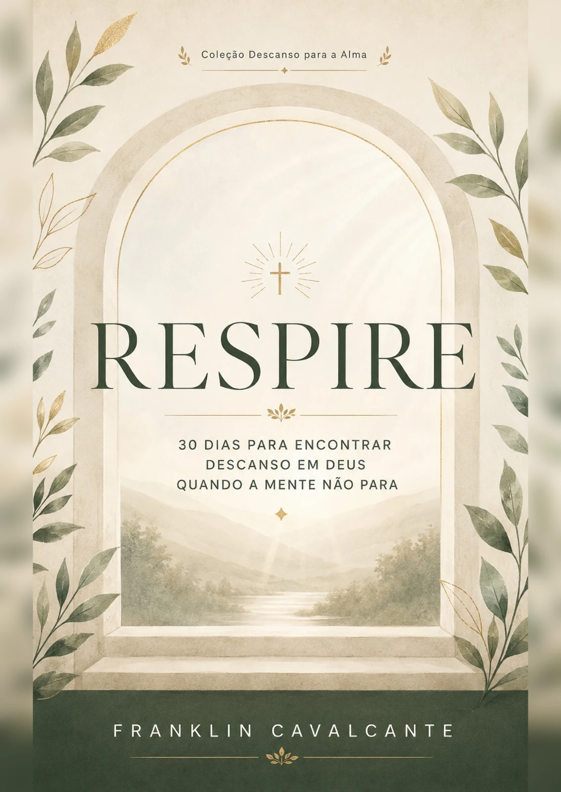

Acolher
Um primeiro espaço para reconhecer o que você sente e se aproximar da própria caminhada com gentileza.
Um devocional de Franklin Cavalcante
30 dias para encontrar descanso em Deus quando a mente não para.
Reflexões, oração e pequenas práticas de cuidado para acompanhar seus dias com fé e acolhimento. Uma página de cada vez. No seu ritmo.
Quero começar minha jornadaR$ 39,90 à vista Livro digital em PDF

Você pode chegar como está
Há dias em que a mente não encontra silêncio e o coração carrega mais do que consegue explicar. O Respire nasce como um espaço de reflexão, em que a fé pode ser acolhimento e o cuidado começa com o que é possível hoje.
Os 30 dias são uma proposta de caminhada. Você pode fazer pausas, voltar a uma reflexão ou permanecer mais tempo em um tema.
Acolher. Cuidar. Continuar.
Um primeiro espaço para reconhecer o que você sente e se aproximar da própria caminhada com gentileza.
Reflexões, orações e pequenas práticas que convidam à pausa e ao cuidado no cotidiano.
Uma caminhada que segue para além da leitura, com ferramentas de registro, apoio e planejamento sem sobrecarga.
Por dentro do Respire
Um livro para ler, refletir e registrar sua própria experiência.
Referências bíblicas, reflexões e orações para acompanhar os temas da jornada.
Convites para reconhecer pensamentos, sentimentos e necessidades, com espaço para escrever.
Propostas de pausa e cuidado para percorrer no seu próprio ritmo.
Rede de apoio, planejamento sem sobrecarga e registros de cuidado para além dos 30 dias.
Seu próximo momento de pausa
Respire — devocional de 30 dias
De Franklin Cavalcante
Confira as condições de parcelamento no checkout.
Quero conhecer o RespireCompra pelo checkout da Kiwify.
Como você recebe
Confira seus dados, especialmente o e-mail, e escolha a forma de pagamento no checkout.
Após a confirmação do pagamento, as instruções de acesso serão enviadas ao e-mail informado.
Entre na área de membros da Kiwify e abra a aula de boas-vindas para baixar o livro.
Livro digital em português. Não há envio de exemplar físico.
Antes de começar
É um livro digital em PDF, em português, com 133 páginas, incluindo a capa. Você recebe acesso para baixar o arquivo pela área de membros da Kiwify. Não há envio de livro físico.
Não. Os 30 dias são uma proposta de caminhada. Você pode ler no seu ritmo, fazer pausas e voltar a um tema quando desejar.
Não. O Respire é um material devocional, educativo e reflexivo. Não substitui avaliação ou acompanhamento profissional e não promete cura nem resultados em prazo determinado.
Após a confirmação do pagamento pela Kiwify. O tempo de confirmação depende da forma de pagamento escolhida. Confira seu e-mail ao comprar e procure também nas pastas de spam e promoções.
Escreva para respire.descansoparaaalma@gmail.com, informando o e-mail utilizado na compra e a dificuldade encontrada. Não envie senha ou dados completos de cartão.
Estamos por aqui
Para dúvidas sobre o livro ou ajuda com o acesso, fale com o suporte do Respire.
respire.descansoparaaalma@gmail.com